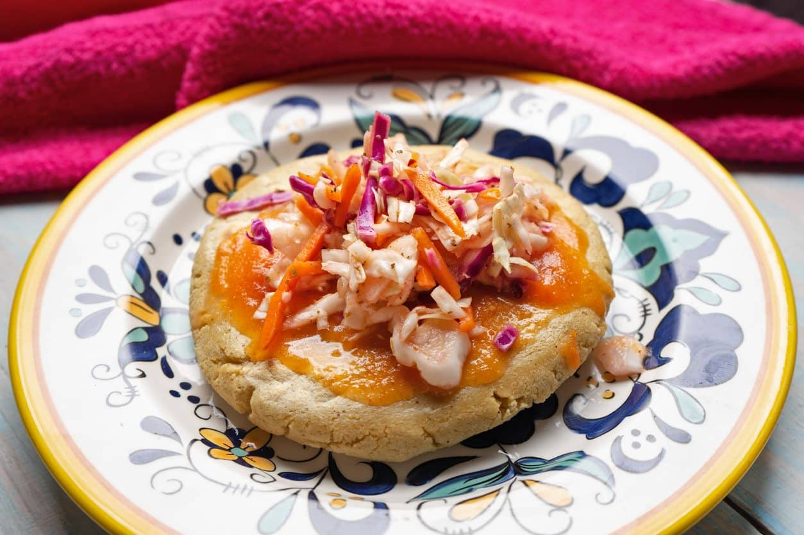

Pupusa

Description:
Pupusas are native to El Salvador and Central America. An ancient dish
that dates back to pre colombian times. Simple to make and easy to enjoy.
- 2 cups masa harina
- 1 cup of water
- 1 cup queso fresco, crumbled
- Stir the masa harina and water together in mixing bowl until smooth; knead well.
Cover bowl, and let the dough rest 5 to 10 minutes.
- Shape dough into eight, 2 inch diameter balls. Sprinkle 1/4 cup queso fresco over each round.
Place second tortilla over cheese, and pinch edges together to seal cheese.
- Heat ungreased skillet over medium-high heat. Place tortilla into skillet and cook until cheese melts
and tortillas are lightly browned, about 2 minutes on each side.